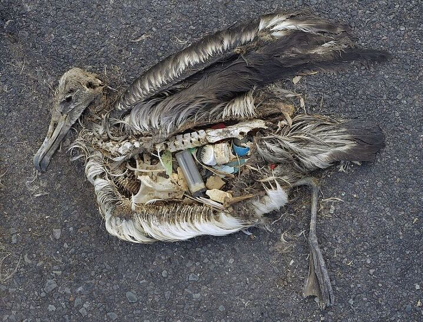

분리수거, 잘 하시고 계시나요?

사진을 클릭해주세요
이 사진은 배가 쓰레기로 가득 찬 채 죽은 알바트로스 새끼의 모습입니다.
2018년 세계 은행 보고서에 따르면, 지금 전세계 사람들은 몸무게의 3배가 넘는 쓰레기를 만들어 내고 있습니다.
쓰레기로 인한 환경오염을 줄이고, 쓰레기가 될 물건의 생산을 줄이는 가장 쉬운 방법인 분리수거!
그러나 잘못된 분리수거는 오히려 재활용을 어렵게 한다는 점, 알고 계셨나요?
더 멋진 환경 지킴이가 되기 위해, 지금부터 분리수거 상식을 간단히 테스트해봐요!
시작하기